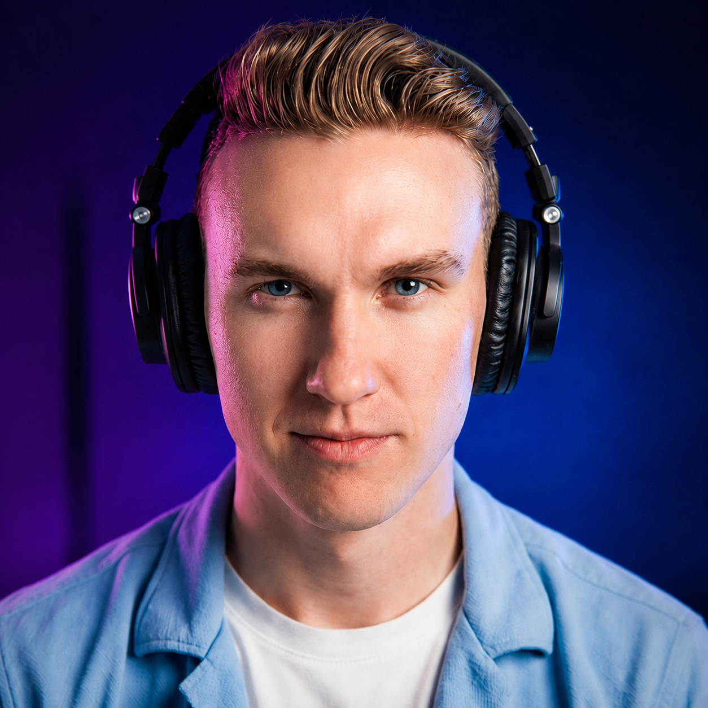
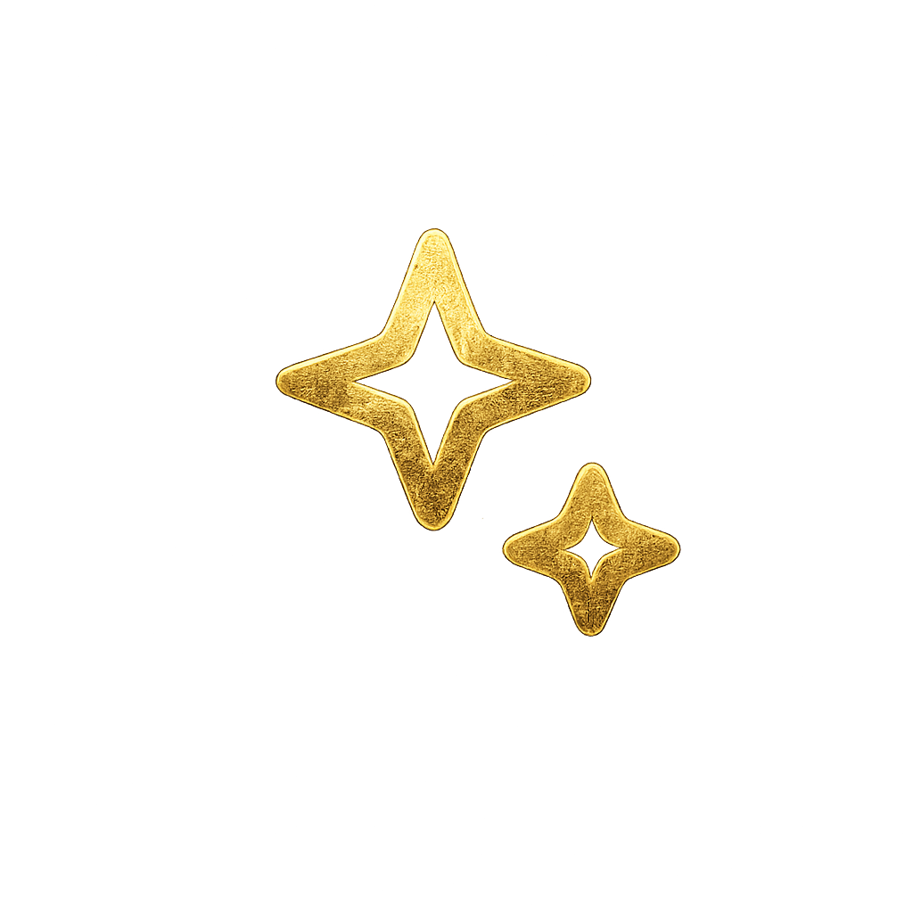

Kyle Painter
CEO, Disruptors Media

Free AI Audit
audit.disruptorsmedia.com
›
Disruptors Media Website
disruptorsmedia.com
›
Sign the petition to demand aligned AI
superintelligence-statement.org
›